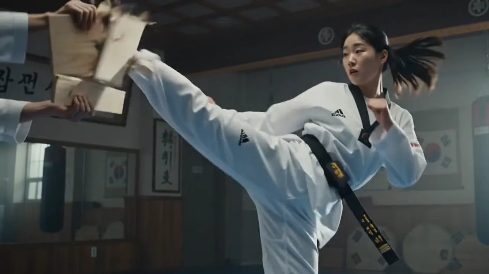
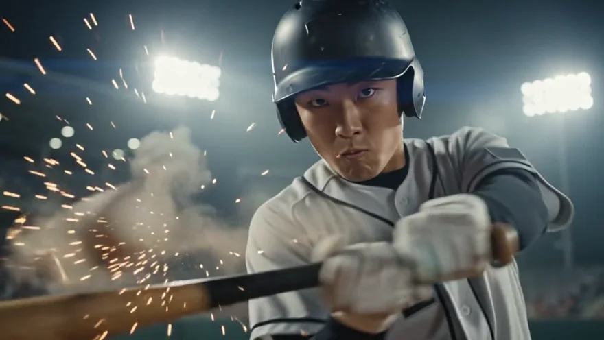
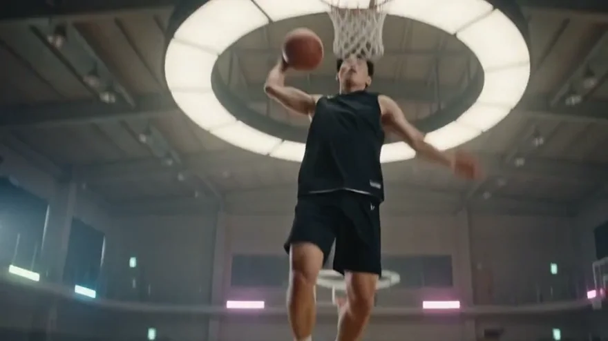
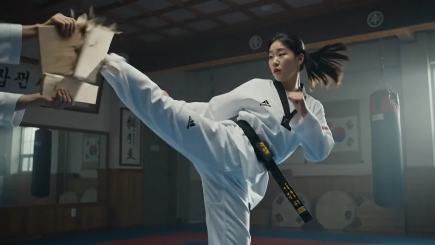
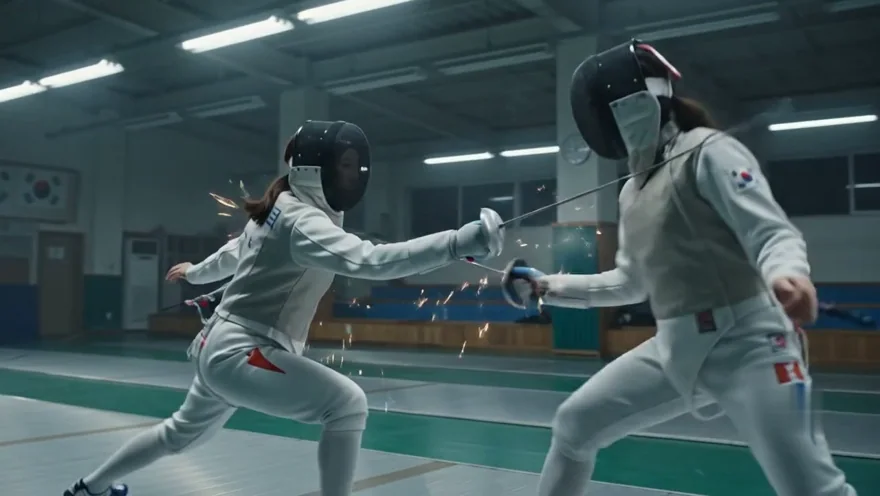
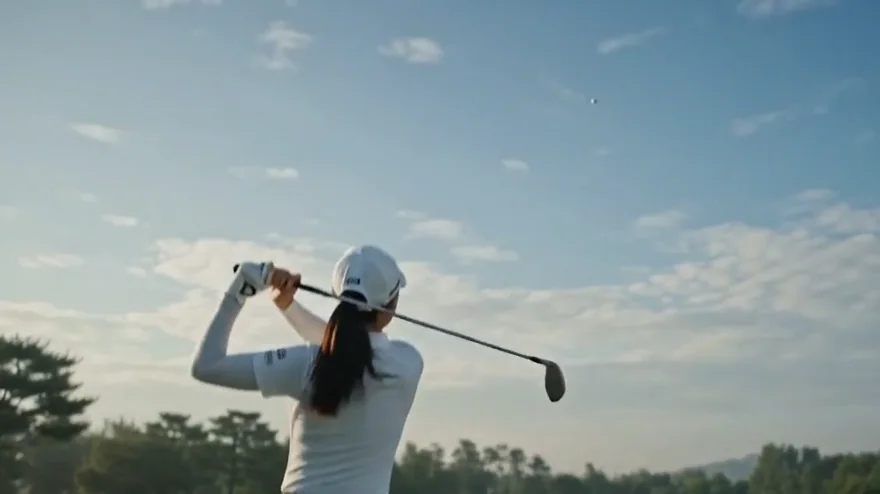
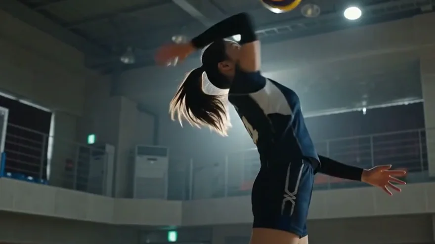
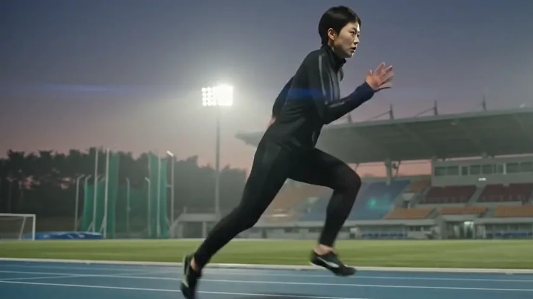
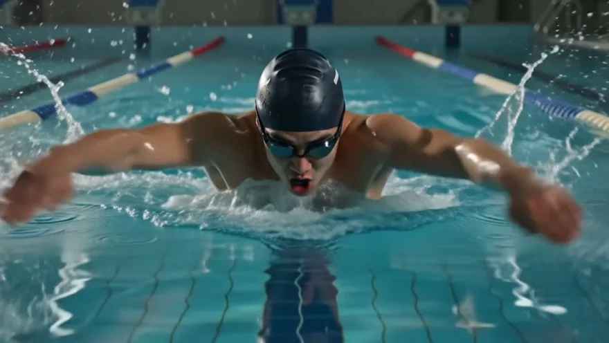
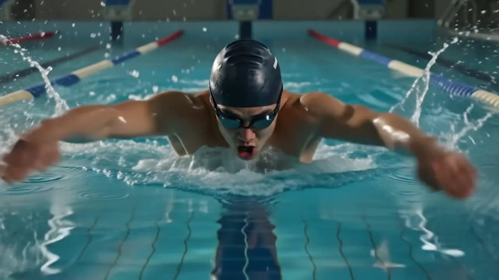

우리 아이의 훈련 부하를 과학적으로 지키고, 매일의 루틴이 진학 실적표가 되는 앱. 하루 3분이면 충분합니다. 아이를 위한 앱이 아니라, 아이를 보는 부모의 앱입니다.

유소년 엘리트 선수의 훈련은 기록되지 않고, 통증은 참아지고, 실적은 흩어집니다. 세 가지 문제를 하나의 루틴으로 해결합니다.
부상의 상당수는 훈련량이 급격히 늘 때 발생합니다. 급성:만성 부하비(ACWR)를 매일 계산해 위험 구간에 들어서기 전에 미리 알려줍니다. 야구는 MLB Pitch Smart 기준 투구 수와 휴식일까지 자동으로 관리합니다.
훈련 일지, 통증 부위, 키 성장 곡선, 지도자 평가가 타임라인 하나로 쌓입니다. 병원에 갈 때는 의료진에게 제출 가능한 성장·케어 타임라인으로, 진학 시즌에는 실적표로 바뀝니다.
명문 학교 진학의 순간, 말보다 강한 것은 기록입니다. 매일의 루틴 수행률과 대회 실적, 지도자 평가를 A4 한 장의 실적표 PDF로 출력해 그대로 제출할 수 있습니다.
38개 종목마다 매일 루틴과 부상 리스크가 다르게 설계됩니다. 대표 11개 종목의 예시를 보세요.








앱의 핵심 기능 네 가지를 홈페이지에서 그대로 체험할 수 있습니다. 눌러보고, 움직여보세요.
선수는 아침에 컨디션을 답하고, 오늘의 루틴을 체크합니다. 등급은 오직 훈련으로만 올라가고, 주 1회 회복일도 연속 기록으로 인정됩니다. 무한 스크롤도, 연속 보상 루프도 없습니다.
이번 주 훈련량(급성 부하)을 지난 4주 평균(만성 부하)과 비교한 ACWR 지수로 부상 위험을 추적합니다. 아픈 곳은 몸 그림에서 눌러 기록하면 학부모와 지도자에게 공유됩니다.
아픈 곳을 탭하세요
루틴 수행률, 훈련 시간, 대회 실적, 지도자 평가가 자동으로 집계되어 A4 한 장의 실적표로 완성됩니다. 진학 상담과 원서 제출에 그대로 사용할 수 있는 공식 문서 형식입니다.
실제 앱에서는 기록이 자동 집계되어
인쇄 가능한 PDF로 출력됩니다.
6자리 코드 한 번이면 아이와 연결됩니다. 몸 상태, 통증 알림, 이번 주 훈련 부하, 아이가 보낸 메시지까지 — 훈련장에 없어도 부모는 알아야 할 것을 알게 됩니다.
자녀 앱에 표시된
6자리 코드 입력
종목·포지션·연령에 맞춘 훈련 조언. 오늘 무엇을 얼마나 해야 하는지, 아픈 곳이 있을 때 무엇을 멈춰야 하는지 아이가 직접 물어볼 수 있습니다. 대화는 부모에게도 공개되지 않습니다.
MLB Pitch Smart 기준 연령별 하루 상한과 필요 휴식일을 자동 계산합니다.
키 성장 곡선 위에 통증과 훈련량을 겹쳐 의료진 제출용으로 정리합니다.
관절 각도를 측정해 올바른 자세와 비교하고, 부상 위험 동작을 교정합니다.
익명 처리된 리더보드. 참여는 선택제이고, 이름은 가려서만 서버에 저장됩니다.
훈련으로만 입장권이 생성되는 보상 게임. 게임 성과는 등급에 반영되지 않습니다.
레슨비·장비·대회 경비를 종목별로 정리해 지출 흐름을 한눈에 파악합니다.
감독·코치의 5점 척도 역량 평가. 실적표 반영 여부는 선수가 선택합니다.
구독도, 결제 화면도 없습니다. 지금 받는 모든 기능을 그대로 쓸 수 있습니다.
성장기 선수의 데이터는 가장 민감한 개인정보입니다. 처음부터 보호를 전제로 설계했습니다.
모든 기록은 아이의 기기에 먼저 저장됩니다. 서버로 보내는 것은 선택입니다.
구글 로그인을 한 경우에만 국내(서울) 리전에 암호화되어 백업됩니다.
만 14세 미만은 보호자 승인 없이 계정을 만들 수 없습니다.
리더보드 참여는 선택제이고, 서버에는 가린 이름만 저장됩니다.

스스로 루틴을 키우고, 부상을 관리하고, 진학 리포트까지. 지금 시작하세요.